来源：https://iyb4ybu5t9.feishu.cn/docx/WREydp0cio29VyxP0XgcxeUYnDb
最近刚好有朋友在问家里有千亩果园，想要从0入局小红书，该如何去做，所以我这篇文章主要的目的，是从新手实操的角度要如何去做，以及分析的项目情况。
刚好参加了最近一期的小红书店铺航海，现学现用，筛选一些对标账号，然后通过对标账号的拆解，去分析小红书内产品高销量背后的逻辑；
以下几个账号，筛选的思路是店铺销售排名靠前，低粉/高订单量/笔记数量相对较低的账号，这样能够很好的给新手朋友提供思路，怎么样制作高质量的笔记达到更好的销售效果。
目前筛选出来的账号有个，分别如下：
发布笔记数据： 97篇（赞藏数据如下图） 最早笔记发布时间：10-20
客单价：39.9元 店铺销量： 1.5万+ 店铺总销量在60万+
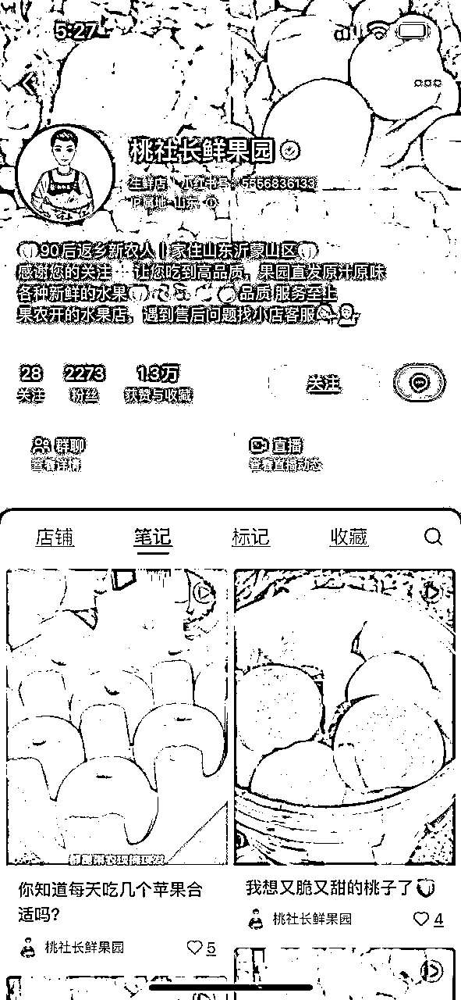
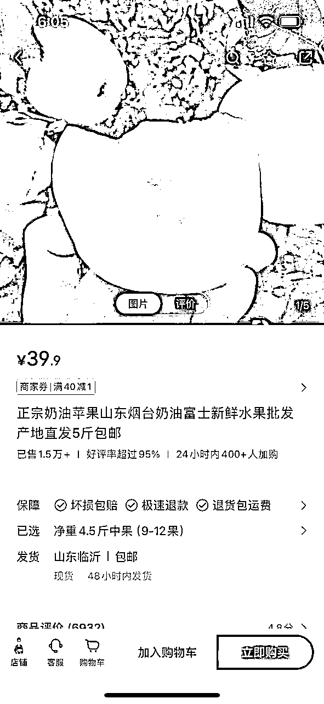
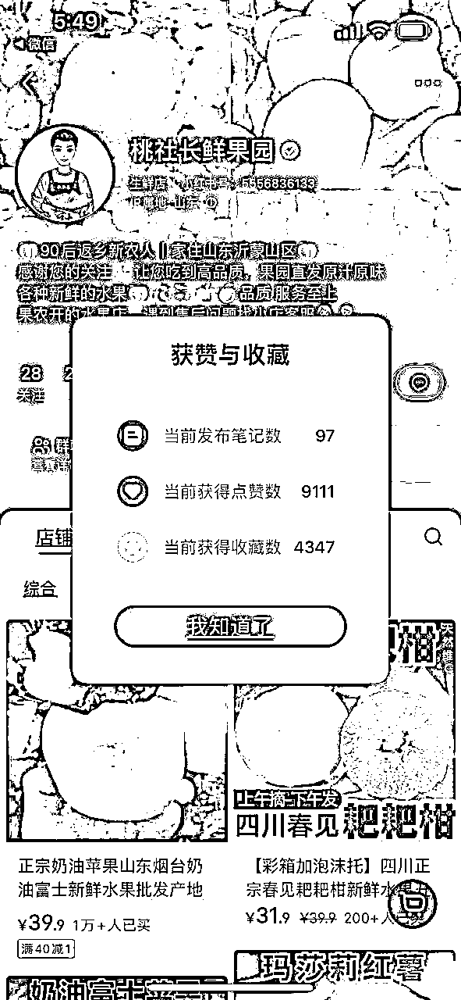
https://www.xiaohongshu.com/user/profile/63dcdfa50000000027029015?xhsshare=WeixinSession&appuid=6323dd34000000002303c70a&apptime=1707126598&wechatWid=225c1c2276fb80ba44bfa5ccd871d186&wechatOrigin=menu
发布笔记数据： 209篇（赞藏数据如下图） 最早笔记发布时间：10-7
客单价：56元 店铺销量： 1.5万+ 店铺总销量在84万+
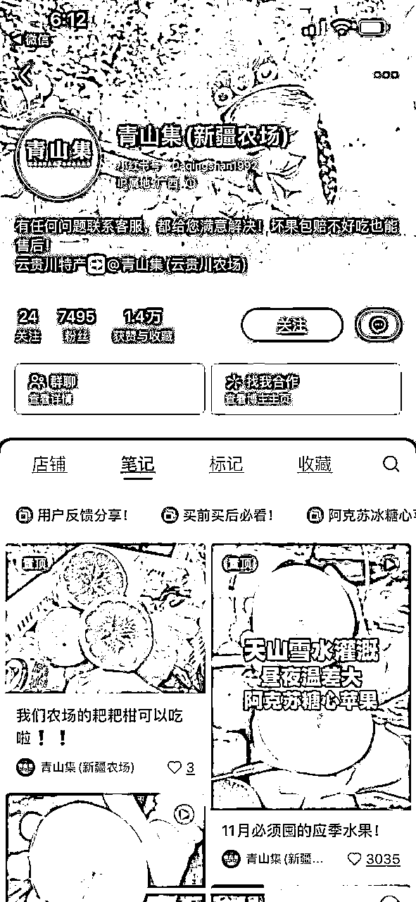
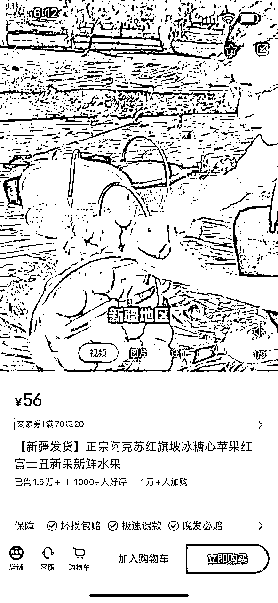
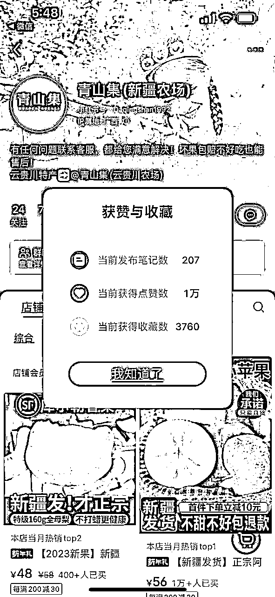
发布笔记数据： 482篇（赞藏数据如下图） 最早笔记发布时间：9-22
客单价：56元 店铺销量： 9.4k+ 店铺总销量在50万+
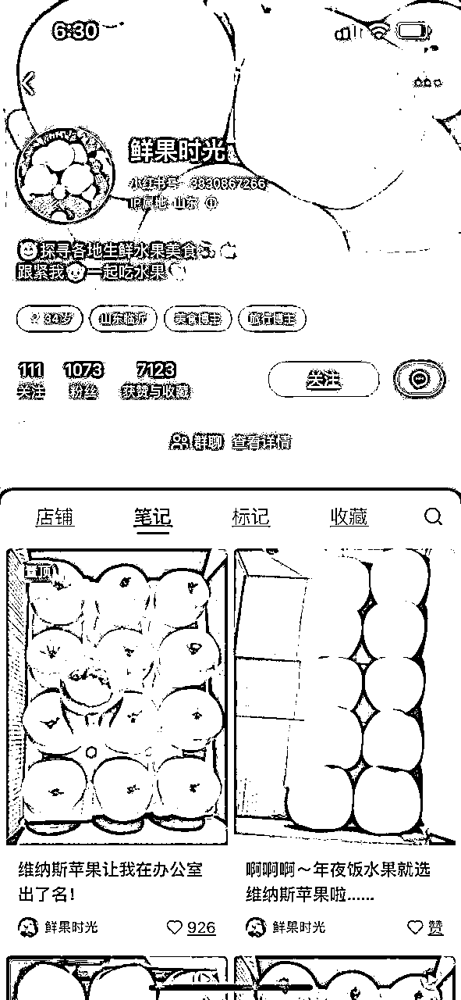
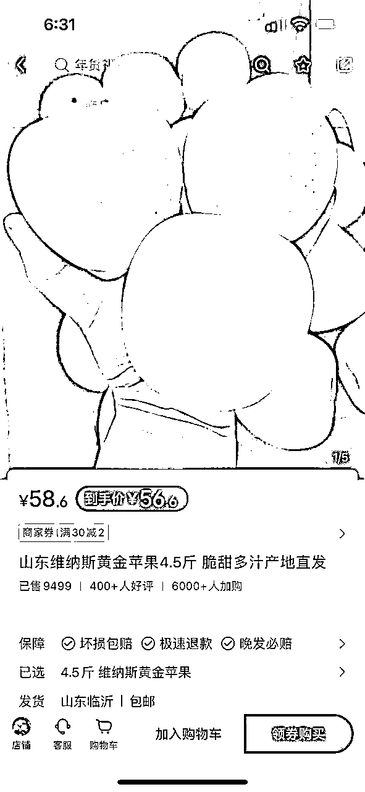
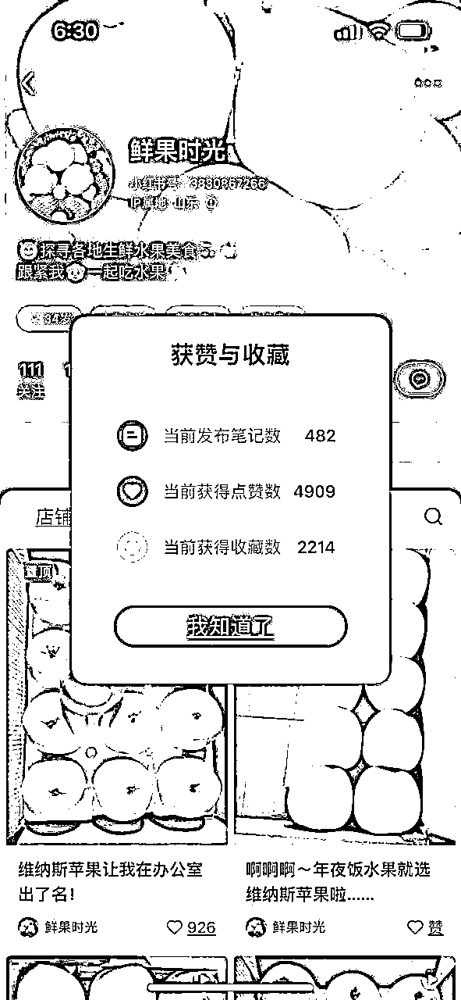
发布笔记数据： 310篇（赞藏数据如下图） 最早笔记发布时间：9-13
客单价：19.9元 店铺销量： 3k+ 店铺总销量在6.5万+
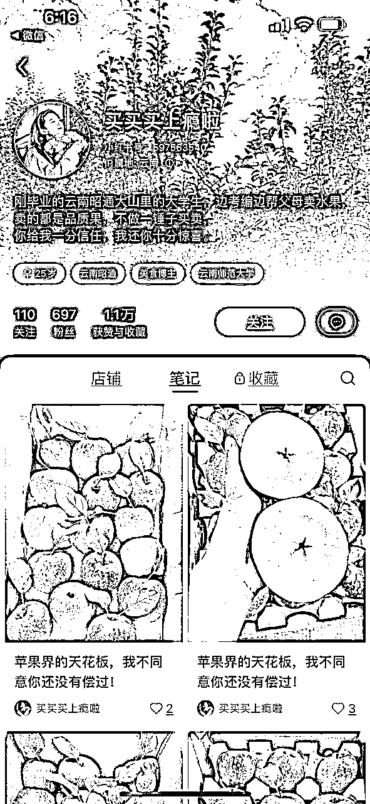
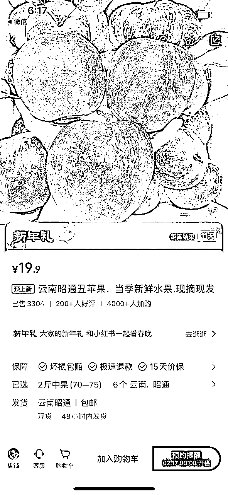
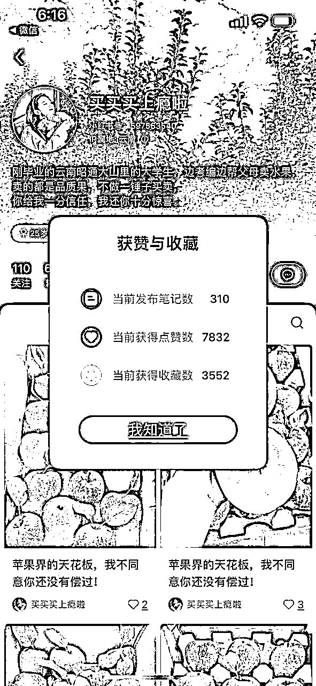
筛选出来的这四类账号基本都是通过内容来获取流量，没有看到有付费推广，当然可能之前在某个节日，如圣诞元旦这种节日有做推广，现在无法看出来；
账号的包装方向：自有农场果园，学生助农卖货等，背景多以水果或者果园照片为主
笔记内容方向：产品实拍穿插发货，果园实拍等
部分账号有爆款笔记，但是基本都保持高频率更新，每天至少3条左右，多的6-8条，内容内容基本都是通过产品实拍来实现，有部分有真人出镜，通过通过挂车卖货来成交，有部分博主建立粉丝福利群，人数不多在50人左右。
结论：小红书怼着一个单品持续发笔记，然后找到爆款模板之后，可以迅速起量。
抖音精选联盟
以上四种不同产地的苹果，从抖音精选联盟都可以查到相应的产品，然后佣金率在20%-30%之间，产品原价比小红书低5-10元
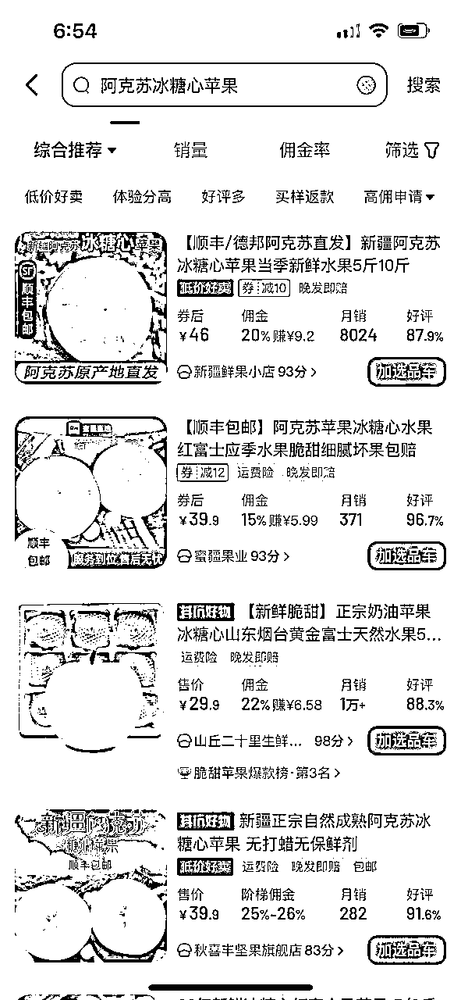
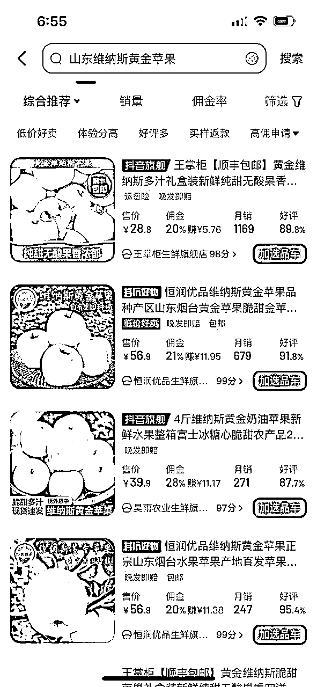
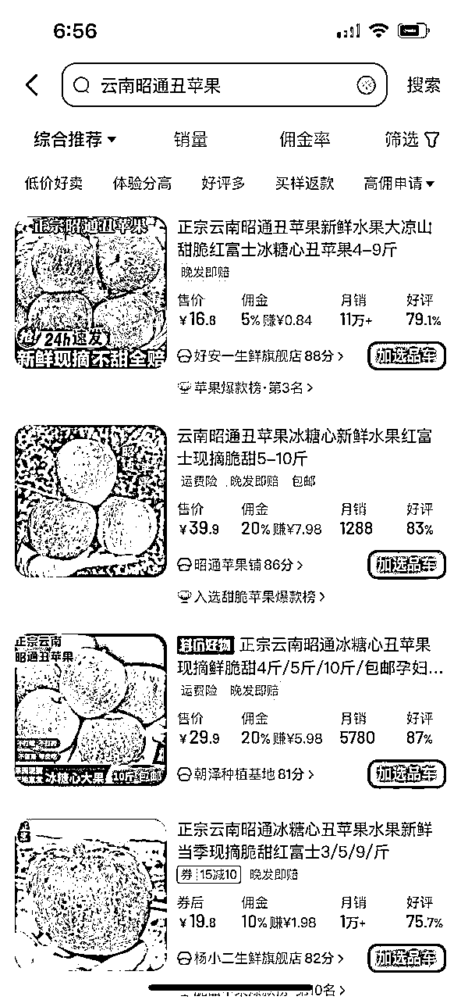
无货源
拼多多或者1688
以1688为例，四种产地的水果都可以找到，定价是小红书定价的50%左右
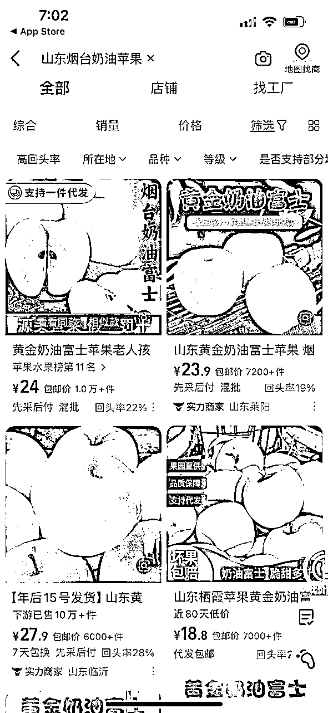
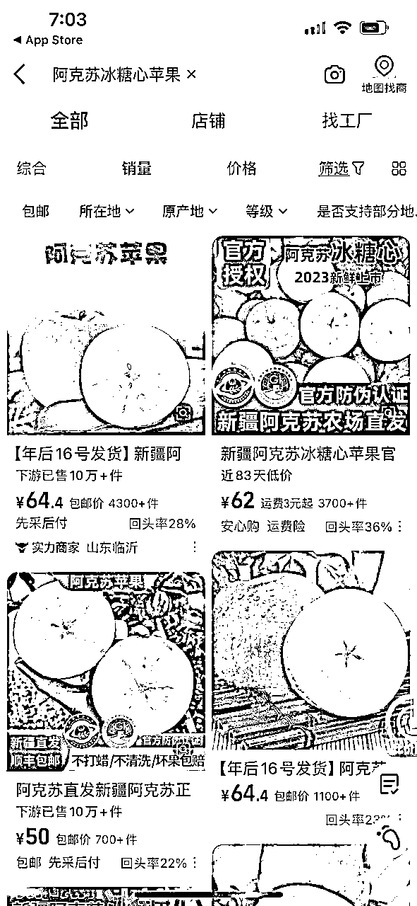
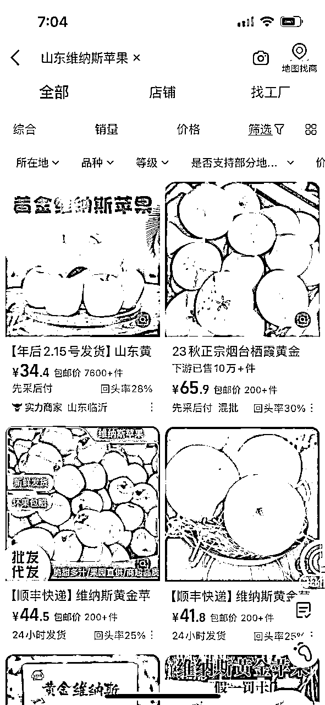
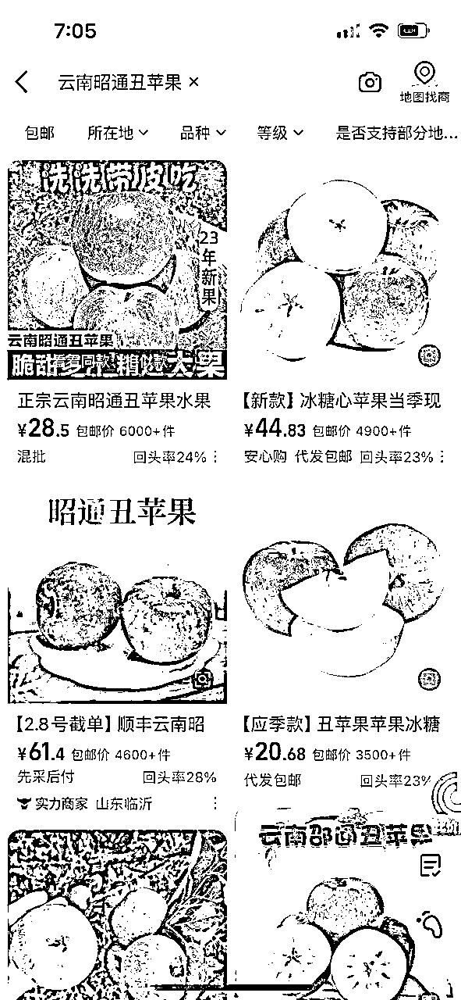
💡利润的核算非常简单，本质上就一条核心公式：利润=收益-成本
1）收益分析
2）成本分析
3）综合利润
因为我本人没有做过生鲜类产品，所以保守估计，这个项目如果能够找到匹配的供应商，解决上面三个问题，那么利润率保守在15%以上，如果是自有果园，然后没有小红书经验的新手，单个账号做到GMV在2万左右，赚点零花钱是OK的。
综合上面的结论，我们可以给出一套属于自己的路径。
以4的小博主为例，我们优先梳理：
具体操作流程：
从上面的分析来看，如果是自有果园的新手生鲜类账号内容制作相对简单，持续高频发布垂直内容，新手单账号收益总销售量2-3万，赚个几千块钱是没有问题的，按照15%净利润来算。
因为自有果园有稳定供应链，一旦流程跑通了之后，解决好爆单采摘的人力成本和发货的问题，通过直播提升流量转化效率，也可以通过矩阵账号来放大。